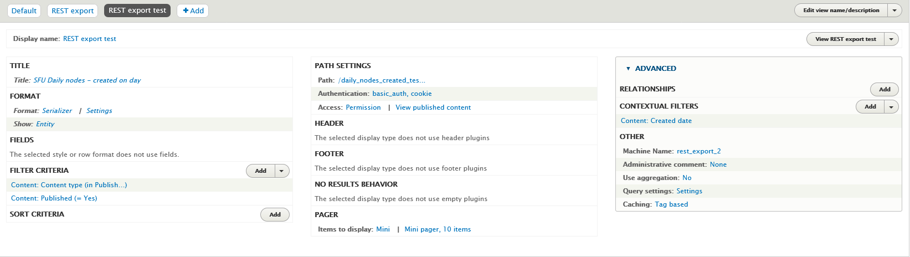

Generating CSV files
Islandora Workbench can generate several different CSV files you might find useful.
CSV file templates
Note
This section describes creating CSV file templates. For information on CSV field templates, see the "Using CSV field templates" section.
You can generate a template CSV file by running Workbench with the --get_csv_template argument:
./workbench --config config.yml --get_csv_template
With this option, Workbench will fetch the field definitions for the content type named in your configuration's content_type option and save a CSV file with a column for each of the content type's fields. You can then populate this template with values you want to use in a create or update task. The template file is saved in the directory indicated in your configuration's input_dir option, using the filename defined in input_csv with .csv_file_template appended.
The template also contains three additional rows:
- human-readable label
- whether or not the field is required in your CSV for
createtasks - sample data
- number of values allowed (either a specific maximum number or 'unlimited')
- the name of the section in the documentation covering the field type
Here is a screenshot of this CSV file template loaded into a spreadsheet application:

Note that the first column, and all the rows other than the field machine names, should be deleted before you use a populated version of this CSV file in a create task. Also, you can remove any columns you do not intend on populating during the create task:

CSV file containing a row for every newly created node
In some situations, you may want to create stub nodes that only have a small subset of fields, and then populate the remaining fields later. To facilitate this type of workflow, Workbench provides an option to generate a simple CSV file containing a record for every node created during a create task. This file can then be used later in update tasks to add additional metadata or in add_media tasks to add media.
You tell Workbench to generate this file by including the optional output_csv setting in your create task configuration file. If this setting is present, Workbench will write a CSV file at the specified location containing one record per node created. This CSV file contains the following fields:
id(or whatever column is specified in yourid_fieldsetting): the value in your input CSV file's ID fieldnode_id: the node ID for the newly created nodeuuid: the new node's UUIDstatus: true if the node is published, False if it is unpublishedtitle: the node's title
The file will also contain empty columns corresponding to all of the fields in the target content type. An example, generated from a 2-record input CSV file, looks like this (only left-most part of the spreadsheet shown):

This CSV file is suitable as a template for subsequent update tasks, since it already contains the node_ids for all the stub nodes plus column headers for all of the fields in those nodes. You can remove from the template any columns you do not want to include in your update task. You can also use the node IDs in this file as the basis for later add_media tasks; all you will need to do is delete the other columns and add a file column containing the new nodes' corresponding filenames.
If you want to include in your output CSV all of the fields (and their values) from the input CSV, add output_csv_include_input_csv: true to your configuration file. This option is useful if you want a CSV that contains the node ID and a field such as field_identifier or other fields that contain local identifiers, DOIs, file paths, etc. If you use this option, all the fields from the input CSV are added to the output CSV; you cannot configure which fields are included.
CSV file containing field data for existing nodes
The export_csv task generates a CSV file that contains one row for each node identified in the input CSV file. The cells of the CSV are populated with data that is consistent with the structures that Workbench uses in update tasks. Using this CSV file, you can:
- see in one place all of the field values for nodes, which might be useful during quality assurance after a
createtask - modify the data and use it as input for an
updatetask using theupdate_mode: replaceconfiguration option.
The CSV file contains two of the extra rows included in the CSV file template, described above (specifically, the human-readable field label and number of values allowed), and the left-most "REMOVE THIS COLUM (KEEP THIS ROW)" column. To use the file as input for an update task, simply delete the extraneous column and rows.
A sample configuration file for an export_csv task is:
task: export_csv
host: "http://localhost:8000"
username: admin
password: islandora
input_csv: nodes_to_export.csv
export_csv_term_mode: name
content_type: my_custom_content_type
# If export_csv_field_list is not present, all fields will be exported.
export_csv_field_list: ['title', 'field_description']
# Specifying the output path is optional; see below for more information.
export_csv_file_path: output.csv
The file identified by input_file has only one column, "node_id":
node_id
7653
7732
7653
Some things to note:
- The output includes data from nodes only, not media.
- Unless a file path is specificed in the
export_csv_file_pathconfiguration option, the output CSV file name is the name of the input CSV file (containing node IDs) with ".csv_file_with_field_values" appended. For example, if youexport_csvconfiguration file defines theinput_csvas "my_export_nodes.csv", the CSV file created by the task will be named "my_export_nodes.csv.csv_file_with_field_values". The file is saved in the directory identified by theinput_dirconfiguration option. - You can include either vocabulary term IDs or term names (with accompanying vocabulary namespaces) in the CSV. By default, term IDs are included; to include term names instead, include
export_csv_term_mode: namein you configuration file. - A single
export_csvjob can only export nodes that have the content type identified in your Workbench configuration. By default, this is "islandora_object". If you include node IDs in your input file for nodes that have a different content type, Workbench will skip exporting their data and log the fact that it has done so. - If you don't want to export all the fields on a content type, you can list the fields you want to export in the
export_csv_field_listconfiguration option.
Warning
Using the export_csv_term_mode: name option will slow down the export, since Workbench must query Drupal to get the name of each term. The more taxonomy or typed relation fields in your content type, the slower the export will be with export_csv_term_mode set to "name".
Using a Drupal View to identify content to export as CSV
You can use a new or existing View to tell Workbench what nodes to export into CSV. This is done using a get_data_from_view task. A sample configuration file looks like this:
task: get_data_from_view
host: "http://localhost:8000/"
view_path: '/workbench-export-test'
username: admin
password: islandora
content_type: my_custom_content_type
export_csv_file_path: /tmp/islandora_export.csv
# If export_csv_field_list is not present, all fields will be exported.
# node_id and title are always included.
export_csv_field_list: ['field_description', 'field_extent']
# Identify any URL parameters configured for the View (e.g., an exposed filter).
# Note that values in the 'view_parameters' configuration setting are literal
# paramater/operator/value strings,not YAML key: value pairs.
view_parameters:
- 'title_contains=Debate'
The view_path setting should contain the value of the "Path" option in the Views configuration page's "Path settings" section. The export_csv_file_path is the location where you want your CSV file saved.
In the View configuration page:
- Add a "REST export" display.
- Under "Format" > "Serializer" > "Settings", choose "json".
- In the View "Fields" settings, leave "The selected style or row format does not use fields" as is (see explanation below).
- Under "Path", add a path where your REST export will be accessible to Workbench. As noted above, this value is also what you should use in the
view_pathsetting in your Workbench configuration file. - Under "Pager" > "Items to display", choose "Paged output, mini pager". In "Pager options" choose 10 items to display.
- Under "Path settings" > "Access", choose "Permission" and "View published content". Under "Authentication", choose "basic_auth" and "cookie".
Here is a screenshot illustrating these settings:

To test your REST export, in your browser, join your Drupal hostname and the "Path" defined in your View configuration. Using the values in the configuration file above, that would be http://localhost:8000/workbench-export-test. You should see raw JSON (or formatted JSON if your browser renders JSON to be human readable) that lists the nodes in your View.
Warning
If your View includes nodes that you do not want to be seen by anonymous users, or if it contains unpublished nodes, adjust the access permissions settings appropriately, and ensure that the user identified in your Workbench configuration file has sufficien permissions.
Some things to note:
- REST export Views displays don't use fields in the same way that other Views displays do. In fact, Drupal says within the Views user interface that for REST export displays, "The selected style or row format does not use fields." Instead, these displays export the entire node in JSON format. Workbench iterates through all fields on the node JSON that start with
field_and includes those fields, plusnode_idandtitle, in the output CSV. - If you don't want to export all the fields on a content type, you can list the fields you want to export in the
export_csv_field_listconfiguration option. - Only content from nodes that have the content type identified in the
content_typeconfiguration setting will be written to the CSV file. - If you want to export term names instead of term IDs, include
export_csv_term_mode: namein your configuration file. The warning about this option slowing down the export applies to this task and theexport_csvtask.
Exporting image, video, etc. files along with CSV data
In export_csv and get_data_from_view tasks, you can optionally export media files. To do this, add the following settings to your configuration file:
export_file_directory: Required. This is the path to the directory where Workbench will save the exported files.export_file_media_use_term_id: Optional. This setting tells Workbench which Islandora Media Use term to use to identify the file to export. Defaults tohttp://pcdm.org/use#OriginalFile(for Original File). Can be either a term ID or a term URI.
Note that currently only a single file per node can be exported, and that files need to be accessible to the anonymous Drupal user to be exported.